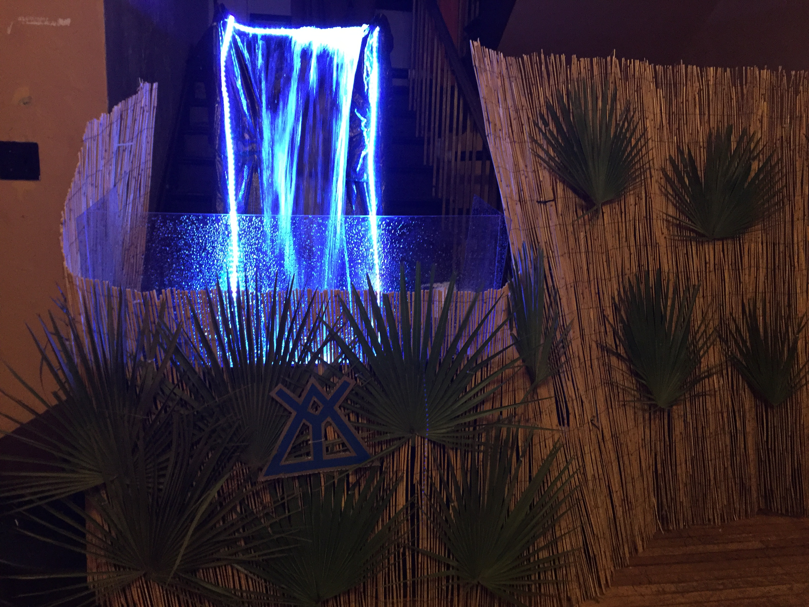

April 2016

Every Spring my fraternity, Delta Upsilon, hosts our tropical-themed Sling party. We go all out decorating the house, including erecting a massive centerpiece waterfall at the entry to the party. The previous setup was stored outdoors, and after many years enduring the elements the wooden tanks and waterfall trough finally succumbed to rot. I volunteered to reconstruct the new version, bigger and better than the last. It was a massive hit.
This waterfall flows eight feet outward from the stairway landing before falling five feet to the bottom of the rectangular catch trough. The main waterway is two feet wide. I designed the system around two previously-bought pumps. One, which outputs 3000 GPH at 6' rise, pumps water from 55 gallon storage tanks to the top of the water trough. The other, which outputs 2400 GPH, pumps water out of the catch trough back into the third storage tank (where the first pump is located). The remaining ~600 GPH flows though flexible tubing back to the first storage tank. I estimated ~90 gallons of water were needed to run the waterfall, accounting for water circulating through the waterfall and pipes, and stationary water in the tanks to reach the pumps' minimum water level requirement. Erring on the side of safety, I used 3 55 gallon water drums as main storage tanks. The three tanks are connected in line via PVC union couplings, which seals the connections when in use but allows each tank to be moved and stored separately. Well-positioned threaded couplings throughout the circulation system make it easy to assemble and take down for storage. An LED light strip behind the waterfall and bamboo fencing to hide the equipment completes the look.
Below, some photos taken during the weekend-long construction process.